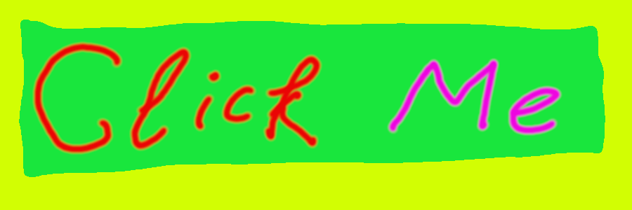

Пипочка
Та самая пипка. Но pumple дословно переводиться как прыщик, а это в айти технологиях, непозволительная катастрофа! Поэтому лучше называть как бугорок или Knoll - холмик.
Вся гениальность этой идеи, проста: когда опускаешься ниже, выпячивается пипка. Вырастает маленький холмик, который можно потрогать. И… при взаимодействии с этим высокотехнологичным устройством. Раскрывается список возможностей.
Да, есть закон о коммунизменности если думать не туда, как говорила одна из участников интенсива школы21: “О_о персонаж, а ты точно программист???”. Вообще то да! Но традиционно сложилось что у человеческого тела, нету возможностей взаимодействовать с невидимым миром. Еще есть клип продиджи вуду пипл, в котором интерпретация текста повествует что все возможно, в смысле так оно мАгиА.
Программировать это магия!
В айтишной области есть сложная ситуация, когда одно и тоже делается разными путями. Одинаково работает. Но понять ход мыслей как этот путь был выведен. Сложнейшая задача не поддающаяся здравому смыслу. Все понятно, а ход мыслей, его не видно! Это и есть магия! Магия как простая, но с щепоткой сказочного волшебства!
P/S. Радуга, единороги, вкусняшки и волшебное настроение! Система комментирования SigComments